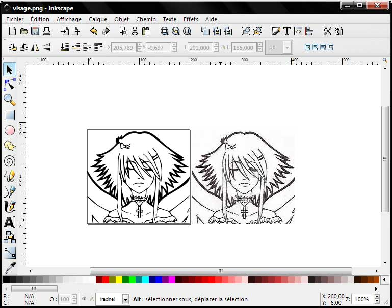

C'est l'action de transformer une image définie par des points colorés (bitmap, i.e. une image "standard") en une image définie par des formules mathématiques appelées "vecteurs" : lignes, courbes, etc.
Ce tuto va vous apprendre à vectoriser facilement une image.
On peut agrandir une image vectorisée presque à l'infini, à la taille qu'on veut et sans perte.
Les images prennent moins de place qu'en bitmap.
Les inconvénients
Il est presque impossible de gérer des couleurs complexes ; la vectorisation ne convient donc que pour le dessin au trait ou colorié par a-plats (exemple : BD "traditionnelle" (pas les coloriages complexes modernes), mangas sans les trames (on peut mettre des niveaux de gris par contre), etc.)
Vous pouvez oublier tout de suite vos photos de vacances !
Comment fait-on ?
Pour l'exemple, je vais prendre ce dessin au trait, fait par une demoiselle pseudo-nommée dayMdel et qu'elle nous avait donné pour un antique concours de coloriage, sur un tout autre site. Comme vous pouvez le voir, c'est un dessin « au trait » : c'est noir ou blanc, il n'y a pas de niveaux de gris, de couleurs ou de trames.
Voyons son visage :
Imaginons que je veuille ce visage, mais trois fois plus grand. Que puis-je faire ?
Ce qui se passe quand on agrandit une image "bitmap"
Donc, j'ouvre mon image sous Photoshop, et je teste l'agrandissement.
Au plus proche
Voici le visage grandi avec la technique du « au plus proche ». Sans commentaire.
Bicubique
Essayons donc la meilleure technique disponible sous Photoshop, à savoir celle nommée "bicubique". Voici ce que ça donne :
C'est flou. Ca bave. C'est horrible.
Diable. Photoshop ne permet pas d'agrandir proprement ce genre d'image. C'est triste. Que faire alors ?
Mais suis-je bête ! J'ai un visualisateur d'images, nommé IrfanView, qui possède des filtres très poussés de retaillage ! (d'ailleurs, je n'ai jamais compris pourquoi ils n'étaient pas inclus dans des logiciels du calibre de Photoshop...)
Filtre de Lanczos
Voici le visage grandi grâce à un "Filtre de Lanczos".
Malheureusement, si ce filtre est extrêmement efficace sur des images parfaitement propres et nettes, il a tendance à amplifier les artefacts de compression Jpeg. Résultat : ça bave.
Ce n'est pas grave, il y en a d'autres !
B-Splines
Voici le visage grandi avec la avec la technique des « b-splines ».
C'est beaucoup mieux, mais du coup... c'est flou.
Une idée réfléchie
Devant la difficulté et la faible qualité des agrandissements possibles, des gens ont réfléchi, et ont pensé à peu près ceci :
Eh bien oui, on peut retrouver ces traits. Ce processus s'appelle la "vectorisation", et nous allons voir tout de suite comment il fonctionne.
Pour ce faire, téléchargeons un logiciel appelé Inkscape.
Pourquoi lui et pas un logiciel professionnel, genre Illustrator ?
Il est gratuit et libre.
Il contient un module de vectorisation gratuit et puissant.
Il fonctionne sous PC, Mac et Linux.
Je sais m'en servir !
Téléchargez-le et installez-le. L'installation est longue, c'est normal. Pendant ce temps, enregistrez l'image du visage en taille normale dans un coin de votre disque dur, vous allez en avoir besoin pour les tests.
La procédure
Ouvrez la avec Inkscape. Vous avez le droit de pester contre la boîte de dialogue d'ouverture, qui est malheureusement une horreur ergonomique. Vous devez obtenir quelque chose comme ça :
Prenez l'outil "sélection" (la flèche noire) et cliquez sur l'image pour la sélectionner :
Puis faites Chemin --> Vectoriser le Bitmap. On obtient une superbe boîte de dialogue :
On va utiliser le premier mode. Cliquez sur « mettre à jour » pour avoir un aperçu de la vectorisation, puis jouez avec le seuil de luminosité.
Comme il y a pas mal de petits détails, on peut aller voir dans l'onglet « options » pour pouvoir les garder.
Du coup, on ne peut pas mettre de points (ils ne sont pas pris en compte). Adieu les saisies au pavé numérique...
Sans trop forcer, et au bout de quelques essais, on peut trouver des paramètres qui rendent pas mal. Personellement et pour cette image, j'aime bien avec :
Seuil de luminosité : 0,500
Supprimer les parasites : 1
Adoucir les coins : 1,00
Optimiser les chemins : 0,10
Voilà l'image vectorisée et l'image normale côte à côte dans Inkscape (par défaut elles sont superposées, utilisez la flèche noire pour en bouger une, ici le bitmap) :

Remarquez qu'on a perdu en détails, surtout sur le cou ou sur les tout petits trucs.
On peut maintenant exporter notre image en bitmap, à la taille qu'on veut, en sélectionnant l'image et en faisant Fichier --> Exporter en bitmap :
Seule la partie « dimensions du bitmap » nous intéresse.
Voilà ce qu'on obtient :
On aurait pu faire mieux en passant plus de détails sur les réglages.
Information à l'intention de ceux qui sont intéressé par le fonctionnement des choses
Vous savez que le XML est à la mode ? Eh bien, éditez un fichier .svg avec votre éditeur texte préféré... Surprise ! C'est un XML ! Vous allez pouvoir programmer vos images en console sous Linux avec VI ou Emacs ! Tout le fonctionnement interne du SVG est détaillé dans ce tutoriel. Plus sérieusement, ce choix offre quatre avantages :
C'est un format standardisé et ouvert, donc stable dans le temps et implémentable librement.
Les images obtenues se compressent très bien (il y a même un projet de format nativement compressé avec GZip, le .svgz)
On peut récupérer une bonne partie d'un fichier s'il a été corrompu.
On peut faire des modifications directes du fichier XML, et donc le manipuler l'image avec tous les outils gérant le XML. On peut par exemple imaginer un "tableau dynamique" en SVG + Javascript.
Le gros problème de cette technique est qu'elle montre très vite ses limites. L'image doit être parfaite, noir très noir sur blanc très blanc, pas de trop petits détails, pas de couleurs (et surtout pas de dégradés), etc. De plus, il faut retoucher l'image après coup pour avoir quelque chose de parfait.
Du coup, il est intéressant et utile de pouvoir vectoriser n'importe quel type d'images. Ce sera l'objet d'un autre tuto, et il servira aussi pour les améliorations des images générées à partir de celui-ci.
{kind=link}
{kind=link}
{kind=link}
{kind=link}